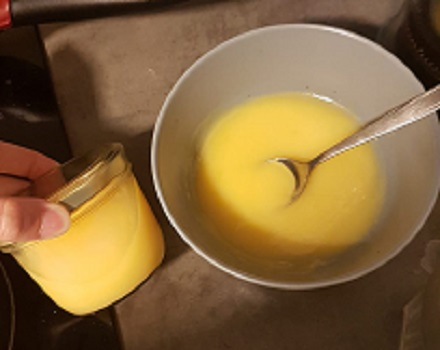

zurück
Lemoncurd
Zubereitungszeit: 15min
Reicht für ca. 600-700ml

- 250ml Zitronensaft
- 125g Butter (gewürfelt)
- 2 Eiweiß
- 3 Eigelb
- 150g Zucker
- Alle Zutaten über einem kochendem Wasserbad vermischen
- Unter ständigem Rühren 6-9 Min kochen, bis es sämig wird
- In sterilisierte Gläser abfüllen